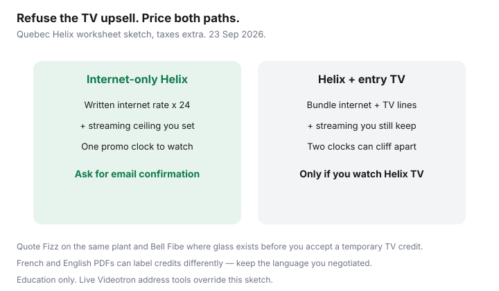

Internet · Canada
Videotron Helix Bundles in Québec: How to Keep Internet-Only Without the TV Upsell
In Québec, Videotron’s Helix stack is designed to sell more than a pipe. The internet quote arrives beside Helix TV, Helix Fi pods, home phone, and a “bundle savings” line that only exists if you take the television. Households who already stream in French and English often leave the call with a TV they did not ask for — or a higher internet-only rate because they refused.
This is an internet-only playbook for Helix shoppers. Run Fizz and Bell Fibe on the same three-quote sheet. Education only; prices and credits change after an address check. Facts stamped ~22 Sep 2026.
Disclosure: No Videotron, Fizz, or Bell partnership. ISP offer types only — internet-only plans, streaming subscriptions, and mesh Wi-Fi systems if the gateway radio is weak. We may later add partner links. Confirm live prices and language versions of the contract before you sign.
Key takeaways
- Helix “savings” are usually cross-product discounts. Price internet alone for 24 months, then add only the TV or phone you will actually use.
- Ask for the internet-only rate in writing before you accept a temporary TV credit. A verbal “we’ll note the account” is how the discount falls off and nothing replaces it.
- Quote Fizz on the same Videotron plant and Bell Fibe where glass exists — both can beat a Helix bundle you do not want.
- French and English contracts can differ in how credits and equipment lines are labelled. Keep the PDF you agreed to.
- Cap streaming after you cut TV so apps do not rebuild the old bill. January audit, same as our cord-cut guide.
What Helix packaging pushes beyond internet
Retail Helix is a platform pitch: one gateway, one app, TV packages, optional telephone, Wi-Fi extenders, and mobility discounts when you also have Videotron wireless. The agent’s script is not evil — it is a commission stack. Your job is to separate the last-mile product from the entertainment add-ons.
- Helix TV — live and on-demand French/English packages that look cheap next to a “bundle” column.
- Helix Fi / pods — rental radios that solve apartment dead zones, or pad the monthly if placement is the real issue.
- Home phone — still sold into households that kept a number for a parent or alarm panel.
- Mobility credits — real only if you will keep the wireless lines for the whole credit window.
If you already pay for Crave, Netflix, Tou.tv, or YouTube TV-style stacks, the Helix TV line is often a duplicate. Price it as a choice, not as the price of admission for a fair internet rate.
Internet-only rates vs bundle “savings” math
Build two 24-month columns before you say yes:
| Line | Internet-only Helix | Helix + entry TV |
|---|---|---|
| Monthly after promo (sketch) | Your written internet-only rate | Lower “bundle” internet + TV line |
| Promo / credit end date | One clock | Often two clocks — internet and TV |
| Equipment | Gateway (± pods) | Gateway + set-top or app entitlements |
| 24-month total | Rate × 24 + install if any | Both products × 24, then add streaming you still keep |
| What you actually watch | Streaming ceiling only | Helix channels + streaming — or waste |

Public 2026 Québec cards still cluster Helix Internet 100 near the high-$60s before taxes when sold alone, while bundle ads look cheaper in month one. The trap is not always the headline — it is the month the TV credit dies while you still pay for Crave. Normalize both paths to the same civic address and the same upload you need.
How to refuse TV and phone without losing a fair internet price
- Complete the Videotron address check for internet only first. Screenshot the rate, upload, term, and equipment line.
- Call or chat and say you are comparing Fizz and Bell at the same unit. Ask retention for a written internet-only offer that matches or beats your BATNA — not a “try TV for three months” detour.
- Refuse temporary TV credits unless you will watch Helix for the whole credit window. A free month that becomes $40 forever is not a gift.
- Get rate, credit end date, upload, term, ETF schedule, and gateway rental in one email.
- If the only “good” price requires TV, walk. Fizz on the same plant or Bell glass may be the real save — see our Fizz vs Videotron and Fibe vs Videotron guides.
Fizz and other Québec alternatives to quote
Same coaxial does not mean the same retail contract:
- Fizz — Videotron flanker, app/chat support, often ~$45-class on 100 Mbps public cards versus Helix ~$68-class (verify 22 Sep 2026-era pages). No phone queue.
- Bell Fibe — where FTTH lands, symmetrical uploads can beat cable for WFH even at a higher monthly.
- Ebox and other resellers — sometimes undercut Bell retail on Bell plant; address-check first.
- Oxio — where Videotron plant is open to them; flat rate, included router, different support model.
Do not reuse an Ontario Bell flyer in Montréal. Québec inventory and French live-TV habits change the winner.
French/English contract gotchas
Québec Consumer Protection Act expectations and Videotron’s bilingual checkout mean you may see two PDFs. Keep the language you negotiated in. Watch for:
- Credit end dates labelled differently in French vs English summaries.
- Equipment “included” language that still shows a rental value on cancellation.
- Bundle discounts that require “services liés” — if TV is cancelled, the internet rate can jump even when nobody said “ETF.”
If the permanent contract conflicts with what you agreed, the Internet Code’s mismatch tools (including the 45-day path for listed providers) are the next stop after you document the chat — not a Facebook rant.
Annual audit so streaming does not replace the TV bill
Internet-only only wins if the apps stay capped. Every January:
- List every streaming charge (CAD, after tax if shown).
- Cancel unused profiles; share one household plan where the terms allow.
- Keep a hard ceiling (illustrative $50/month in our cord-cut guide) so Helix TV does not quietly return as four subscriptions.
- Re-run the address check before any Helix promo cliff — Fizz and Bell cards move.
Sources & date stamps
- Videotron.com Helix internet and TV packaging language (used ~22 Sep 2026).
- Fizz.ca internet notes — flanker pricing and app-only support (used ~22 Sep 2026).
- CRTC Internet Code simplified page and CRTC 2026-43 fee framing via CCTS (re-read ~22 Sep 2026).
- Saving Optimizer Québec companions: Fizz vs Videotron, Montréal bill guide, cut-cable checklist.
Frequently asked questions
Can Videotron refuse to sell me internet without Helix TV?
Retail can quote a higher internet-only rate or push a temporary TV credit, but you are not required to take television. If the only fair number requires TV you will not watch, quote Fizz on the same plant or Bell Fibe instead.
Is the bundle discount illegal?
No. Cross-product discounts are normal. The Internet Code and CRTC 2026-43 still govern contracts, notices, and many activation-style fees. Your job is 24-month math, not a regulation fight over a TV discount.
Should I take three free months of Helix TV?
Only if you will use it for the whole window and you have a written internet rate after the credit ends. Otherwise the free months train the household on a product that later costs more than streaming.
Does Fizz include Helix TV?
Fizz is a separate retail brand on Videotron plant. It sells its own TV à la carte to members. Do not assume Helix packages transfer when you switch.
What must be in the confirmation email?
Internet-only monthly rate, credit end date, upload, term length, ETF schedule if any, equipment rental or inclusion, and install fees. A verbal note on the account is not enough.